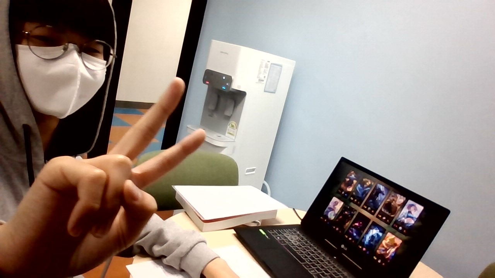

<헉!


| 17/18 살라 |
| 시즌 총 득점 |
48골(리그32골) |
| 시즌 챔피언스리그 총 득점 |
10골 |
| 최근 10경기 득점 |
8골 |
| head ㅁ |
98.1% |
| body |
97.9% |
| html |
97.9% |
경기게임마이스터고
성찰교실
성찰교실
성찰교실
성찰교실
성찰교실
2016년 기준 전 세계 스포츠 리그 수익(revenue) 순위 3위를 차지했다.
프리미어 리그로 개편한 이유는 헤이젤 참사(1985)로
5년간 대륙 대항전 출전이 금지되어 리그 경쟁력이 도태되고
힐스버러 참사(1989)로 인해 리그 개편의 필요성을 느끼면서이다.
이에 1992년 풋볼 리그와 관계를 단절하고 나온 리그가 프리미어 리그이다
2006-07 시즌에는 맨유, 리버풀, 첼시 등 EPL에서 3팀이나 챔피언스 리그 4강에 진출시켰고 리버풀이 결승까지 진출했으나 AC밀란에게 우승을 내줬다.
2007-08 시즌 역시 마찬가지로 맨유, 리버풀, 첼시 등 EPL에서 3팀을 챔피언스 리그 4강에 진출시켰고 이번에는 결승에서도 EPL팀들의 맞대결이었으며 이는 사상 최초의 EPL팀들간 챔스 결승이었다.(맨유 vs 첼시)
2008-09 시즌 또한 첼시, 맨유, 아스날 등 EPL에서 3팀을 챔피언스 리그 4강에 진출시켰다. 맨유는 결승까지 진출했으나 바르셀로나에게 무릎을 꿇었다.
2009-10 시즌에는 맨유와 아스날이 8강에 진출했으나 두 팀 모두 준결승 진출에는 실패했다. UEFA컵에서 새로 출범된 유로파리그에서는 풀럼과 리버풀이 4강에 진출했고 리버풀은 아틀레티코에게 패배하여 4강에서 탈락했지만, 풀럼은 결승까지 진출하여 준우승을 이뤄냈다.
2010-11 시즌에는 첼시, 맨유,토트넘이 8강에 진출했으며 맨유가 4강 및 결승까지 진출했으나 바르셀로나의 벽을 또다시 넘지 못했다. 유로파리그에서는 리버풀과 맨시티가 16강에 진출했으나 모두 8강 진출 실패.
2011-12 시즌에는 첼시가 8강에 진출했으며 이후 4강, 결승까지 진출하여 결국 바이에른을 꺾고 우승까지 차지했다! 유로파리그에서는 맨유와 맨시티가 16강에 진출했으나 두 팀 모두 8강 진출에는 실패한다.
2012-13 시즌에는 아스날이 16강에 진출했으며 유로파리그에서는 첼시, 토트넘, 뉴캐슬이 8강에 진출했으며 첼시가 4강 및 결승까지 올라 우승을 차지했다.
2013-14 시즌에는 첼시가 챔스4강에 진출했다.
2014-15 시즌에는 EPL팀이 16강에서 전멸했다. 유로파리그에서는 에버튼이 16강에 진출.
2015-16 시즌에는 맨시티가 4강까지 진출했으며 유로파리그에서는 리버풀이 결승까지 올랐으나 세비야에게 우승을 내줬다.
2016-17 시즌에는 레스터 시티가 8강에 진출했으머 유로파리그에서는 맨유가 결승까지 올라 우승을 차지했다.
2017-18 시즌에는 맨시티와 리버풀이 챔피언스리그 8강에 진출했고 리버풀이 결승까지 갔으나 레알 마드리드에게 트로피를 내줬다. 유로파리그에서는 아스날이 4강까지 진출했다.
2018-19 시즌에는 유럽 대항전 결승이 모두 EPL 팀으로 이루어지는 등 EPL 초강세 시즌이었다. EPL 4팀을 챔피언스 리그 8강에 진출시켰고 챔피언스 리그 결승에서 EPL팀인 토트넘과 리버풀이 맞붙었다. 유로파 리그 결승에서는 첼시와 아스널이 맞붙었다.
2019-20 시즌에는 EPL팀 중 맨시티만이 8강에 진출했고 맨시티마저 리옹에게 덜미를 잡히면서 8강에서 EPL팀이 전멸했다. 유로파 리그에서는 울버햄튼과 맨유가 8강에 진출했으며 맨유는 4강에 진출했으나 세비야에게 패해 결승 진출에 실패했다.
2020-21 시즌에는 2018-19 시즌과 마찬가지로 EPL 3팀을 8강에 진출시키고 챔피언스 리그 결승에서는 EPL팀인 맨시티와 첼시가 맞붙는 등 다시 EPL이 강세를 나타냈다. 유로파리그에서는 맨유와 아스널이 각각 4강에 올랐고 맨유가 결승까지 올랐으나 비야레알에 패해 준우승에 머무른다.